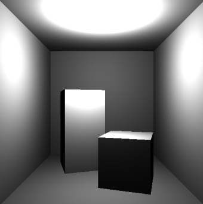
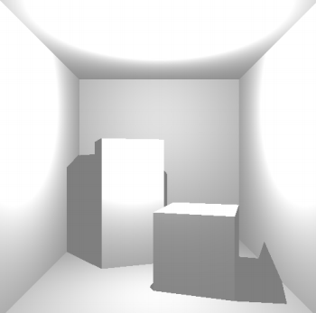
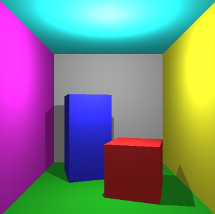
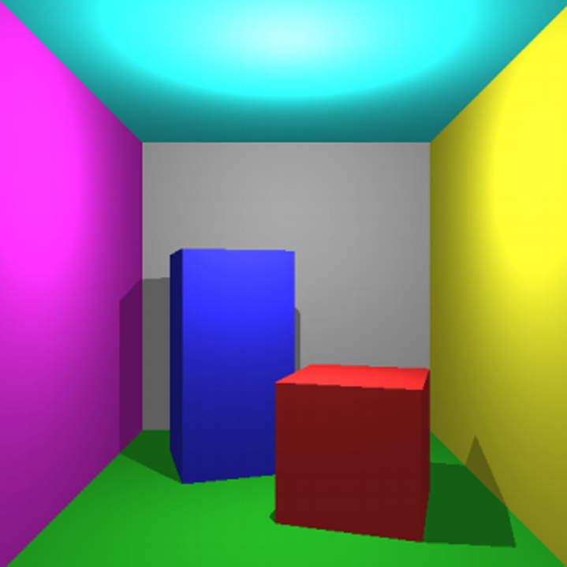
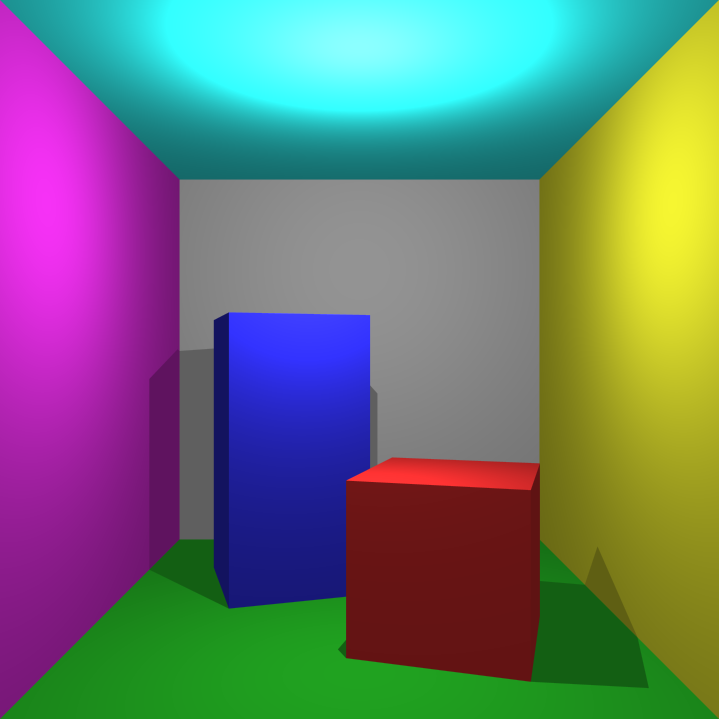
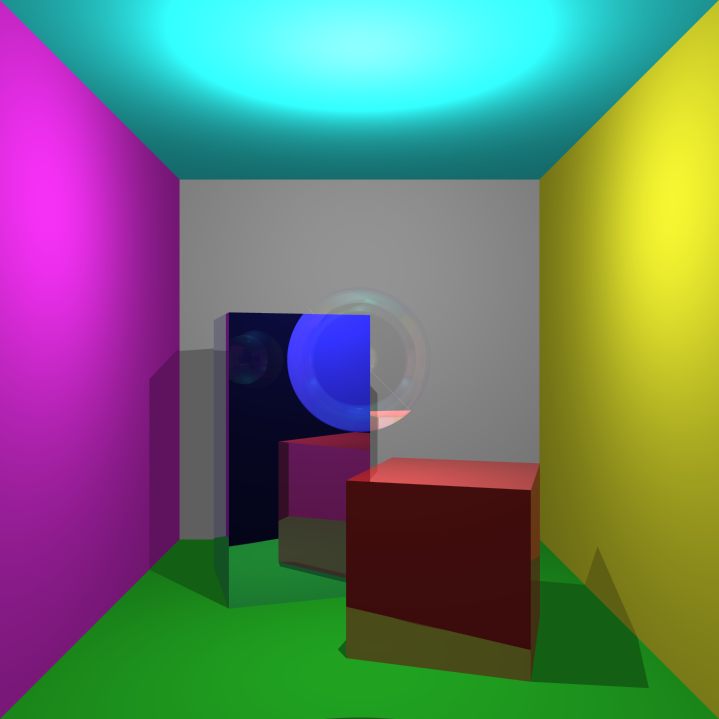

Both Raytracer and Rasterizer are build in Visual Studio using C++ with the OpenGL mathematics (GLM) library and SDL2. The first step for both of them was to render correctly the famous Cornell Box and afterwards there are some extra additions
for each method.
Raytracer
Raytracing is a method which draws images of 3D scenes by tracing the light rays reaching the simulated camera.
The first step is to realise how to represent objects as triangles and triangles as 3 vertices with a normal and a colour. This is a core concept of how items are stored and represented which is not only related to Raytracing but in many major
3D software the idea of how objects are stored is similarly. (Although the representation with only vertices, normal and colour is overly simplistic)
The core concept of Raytracing is how light bounces around in space. Raytracing is an attempt at simulating that behavior. This is done by shooting rays from the camera towards the objects in the scene and calculating the intersection of that ray with
the objects, specifically the closest intersection. By sending a ray from each pixel of the screen through the virtual camera you can get the colour value of the closest intersection for each ray which results in the image shown
in Figure 1.
Figure 1
Direct Illumination: The core step of calculating the intersection of the rays results in an image where the objects have exactly the same colour everywhere without any depth and the feeling of 3D is not present
in the image. For more realism light is added, specifically an omni light which spreads light equally in all directions from a single point in space. The light is represented by its position, and its power in each color component.
If a surface is further away from the light source it receives less light. Calculating just one "bounce" of light in the scene and not considering colour produces the image shown in Figure 2.

Figure 2
Indirect Illumination: Just calculating direct illumination makes the image have very dark spots at some points which is not realistic. In the real world some light is absorbed by the material but some of it is
reflected. To simplify indirect illumination we assume that all objects in the scene are made of the same material and therefore reflect the same amount of light. The resulting light intensity is shown in Figure 3.

Figure 3
Direct Shadows: Figure 3 also shows the effects of direct shadows, meaning that if another surface intersects the ray from the light source to the current surface then that surface does not receive
direct illumination. This produces a simple sharp shadow. Figure 4 shows the end result when you mix the colours of the surfaces with direct illumination, direct shadows and indirect illumination.

Figure 4
Anti Aliasing: At the edges of the objects there are some visible jagged lines which make the image look low resolution or pixelated, they are especially visible on the red cube. This effect is caused because we draw pixel
by pixel without transitioning from object to object making the pixels either the colour of the cube or the colour of the background for example. Anti-aliasing is a method for resolving that problem. In Raytracing anti-aliasing works by
using multiple rays for each pixel instead of one and averaging their resulting values. A simple explanation for it is trying to render a higher resolution image and downsizing it. Figure 5 and 6 show the difference between
the image without anti-aliasing and the image with level 4 (16 rays for each pixel) anti-aliasing.

Figure 5

Figure 6
Experimenting further with the Raytracer, I implemented Reflection, Refraction and combined them through the Fresnel Equation for transparent objects. Raytracing is a very good simulation of the real world which produces realistic and amazing results
for computer graphics. It is computationally expensive though and even though optimizations such as Cramer's rule, render even this simple scene with anti-aliasing and reflection/refraction and transparency is very intense for
a computer.

Figure 7
Rasterizer
Raytracing is a method which draws images of 3D scenes by tracing the light rays reaching the simulated camera.
The first step is to realise how to represent objects as triangles and triangles as 3 vertices with a normal and a colour. This is a core concept of how items are stored and represented which is not only related to Raytracing but in many major
3D software the idea of how objects are stored is similarly. (Although the representation with only vertices, normal and colour is overly simplistic)
The core concept of Raytracing is how light bounces around in space. Raytracing is an attempt at simulating that behavior. This is done by shooting rays from the camera towards the objects in the scene and calculating the intersection of that ray with
the objects, specifically the closest intersection. By sending a ray from each pixel of the screen through the virtual camera you can get the colour value of the closest intersection for each ray which results in the image shown
in Figure 1.